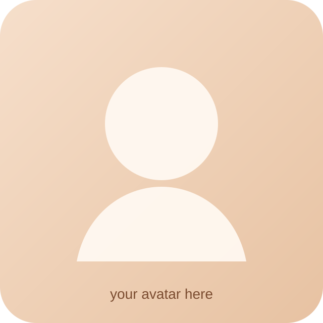

把你的头像文件替换到 assets/avatar-placeholder.svg 即可。
assets/avatar-placeholder.svg
Personal Blog
这里会慢慢收集我的生活感悟、算法题记录和生活摄影。 我希望把日常观察、技术积累和影像片段放在同一个地方，留下一些能回看的东西。
About Me
内容会比较个人化，也会比较真实。生活感悟写思考，算法题写过程，摄影写场景和当时的心情。
How It Grows
每个板块都放在独立文件夹里，后续新增内容和页面时不会互相打架，也方便你自己整理。
Sections
01 / 生活感悟
适合写日常片段、阶段总结、读书观影后的余味。
02 / 算法题
可以按题型、专题或者平台慢慢归档。
03 / 生活摄影
后面可以继续扩展成相册、旅行集或街头记录。